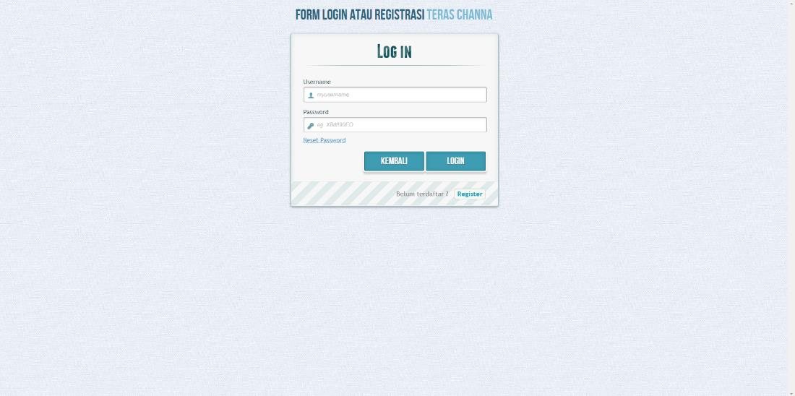
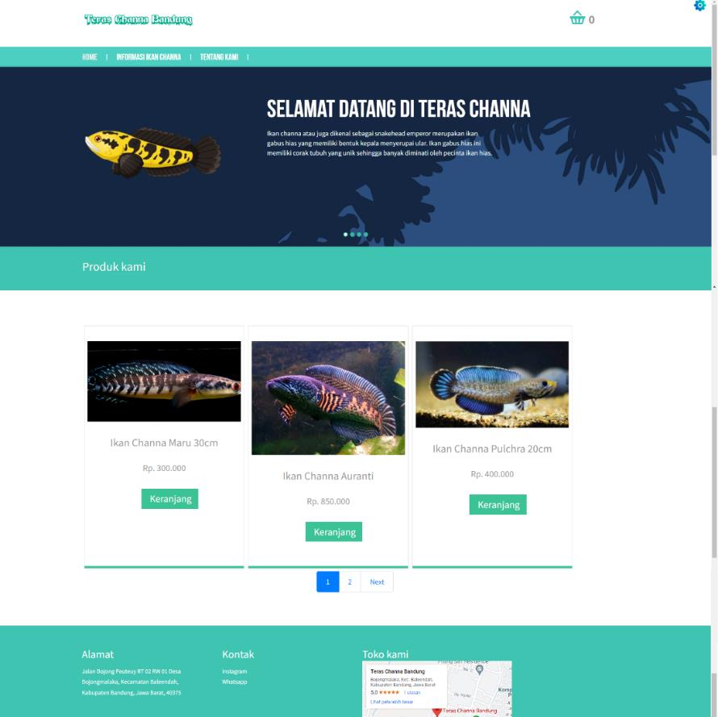
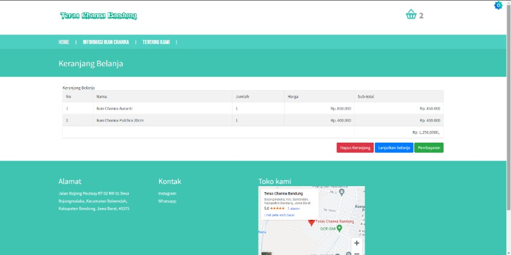
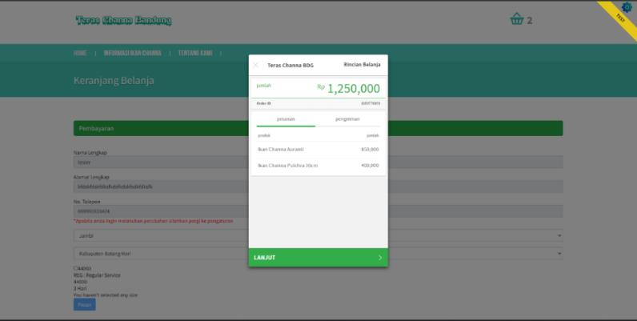
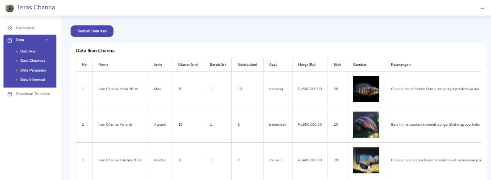
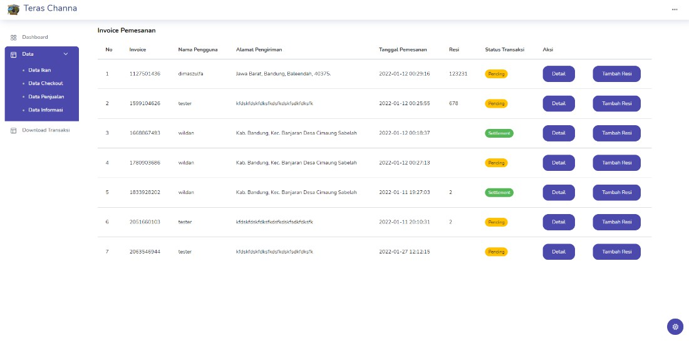
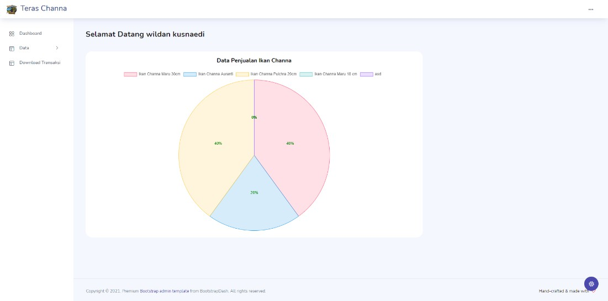
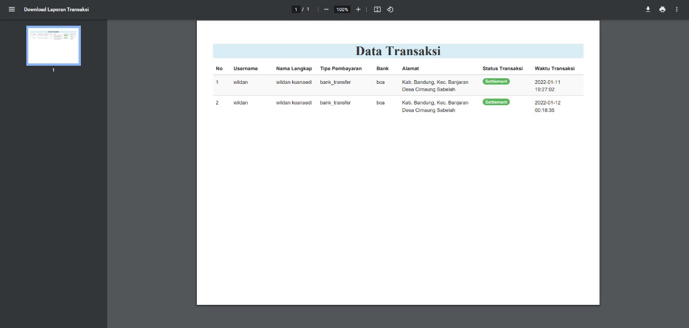

Aplikasi Teras Channa
Aplikasi ini dibuat untuk memudahkan transaksi ikan channa.
Pada Aplikasi ini ada form autentikasi untuk memudahkan pembelian dan
pendataan ikan

Di halaman untuk pengguna ada daftar ikan yang bisa dibeli, keranjang
untuk checkout, dan pembayaran lewat API midtrans



Untuk Administrator halaman yang ditampilkan adalah data ikan channa,
grafik penjualan, dan data transaksi




data yang diolah pada aplikasi ini disimpan pada database MySQL.